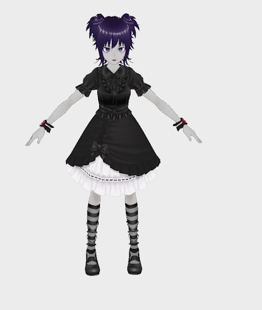
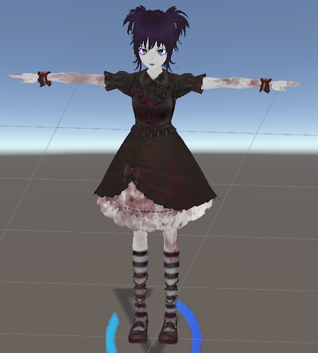
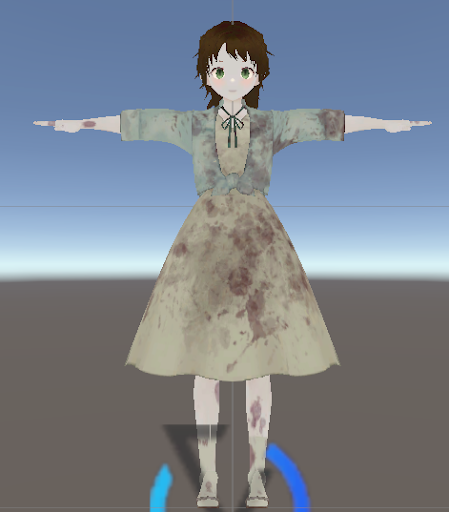
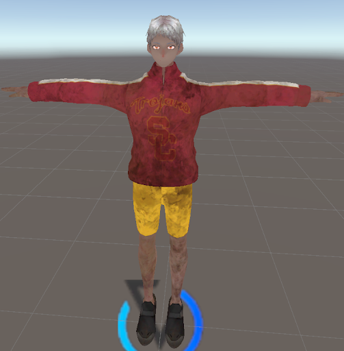
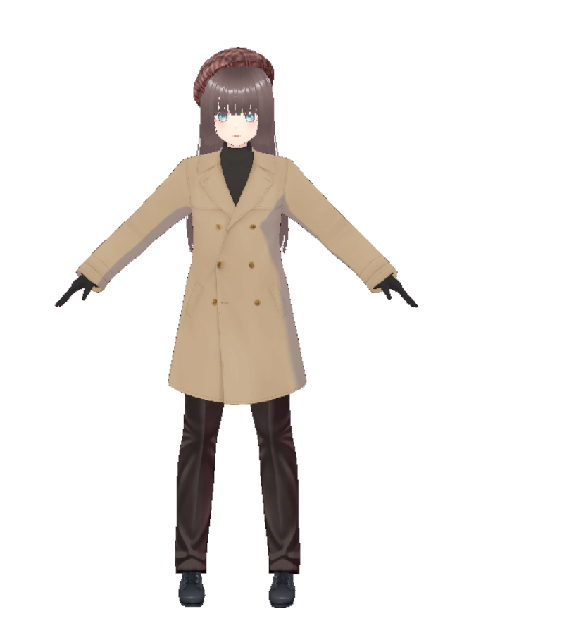
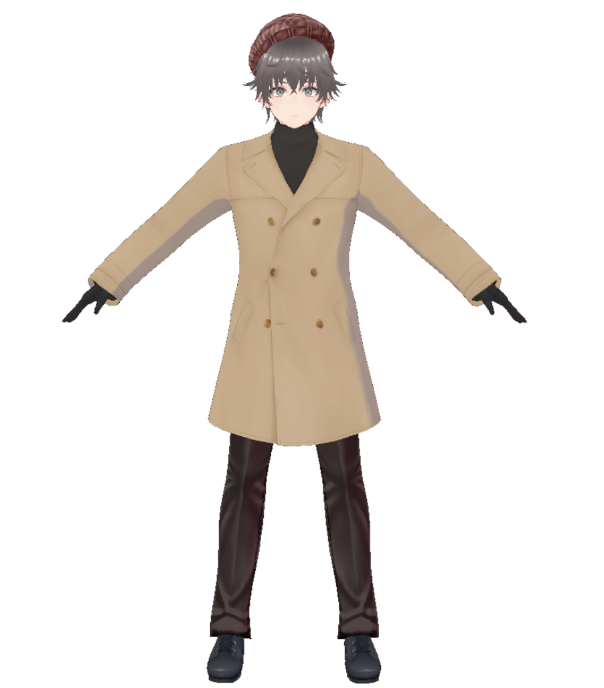
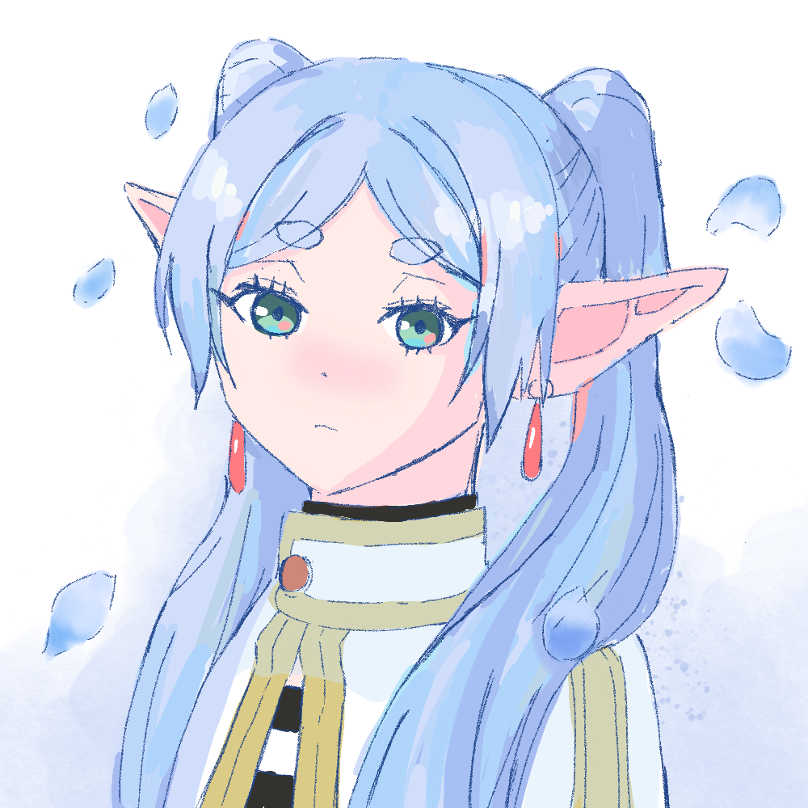

Game Brochure
When we demo'd our game at Sony Interactive Entertainment HQ, this gameplay brochure was
distributed to attendees to provide a quick overview of the
project.
In 1988, a Kappa House party ended in tragedy when seven USC students were found dead. The case went unresolved and the property was abandoned. Years later, an anonymous client hires your team as an independent investigators. Equipped with a unique Snake Camera, a device that allows you to see and speak with the spirit world, you must collect evidence, interrogate ghosts, and piece together exactly what happened that night. Who had killed everyone...?
Game Trailer
Full Gameplay Video. It's 22 minutes long, so idk if you want to watch it all.
Designed and customized all playable and NPC characters using VRoid Studio, Photoshop, and Unity 3D.
Exported each character as a .vrm model with UniVRM, optimized geometry,
and created custom blood, dirt, and grime textures in Photoshop for the final in-game appearance.






After gathering evidence, players enter a final voting phase to identify the true killer. The team must discuss their findings, compare ghost testimonies, and vote correctly to complete the investigation.
After gathering evidence, players enter a final voting phase to identify the true killer. The team must discuss their findings, compare ghost testimonies, and vote correctly to complete the investigation.
We used this pitch deck to present our game concept, gameplay mechanics, and visual direction to judges from San Diego Studio, Insomniac Games, Bend Studio, Naughty Dog, Santa Monica Studio, and other industry professionals attending the game jam presentations.
Game Presentation Pitch Deck

This game jam has been genuinely life-changing for me. Coming into it, I had basically zero experience with Unity before, and over the course of the project I've developed a solid foundation in the engine while learning how to build and optimize a complete game environment. As a result I regrouped, retextured, setdressed, and finalized approximately 100 scene objects in Unity for the abandoned dorm scene in the last few weeks, and gained valuable experience optimizing assets and resources for performance. I also became proficient in Substance Painter, improved both my environment art, character art, and set dressing skills. Besides that I learned how to create character models in VRoid, a tool used for VTuber assets, and adapted it to fit our project's needs in less than a week.
Enqi Wang © 2026. All rights reserved.